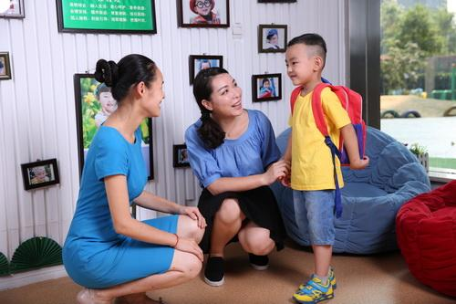

产品服务
幼儿园长心理专题培训
幼儿园长是幼儿教育团队的最高统帅，是幼儿园目标规划、团队建设、教学工作、后勤保障、等等全部园务工作的决策者、操盘手。提升幼儿园长的领导力——全面提高幼儿园教育教学质量，促进幼儿园内涵建设与发展，有许多工作要做，其中相对薄弱然而又非常关键的一环是对幼儿园长心理层面的问题关注和水平的提升。
做一个心理健康的幼儿园长——富有创新理念、智慧和策略的园长，尊重教师、仁爱学生，作风正派、扎实工作的园长，是每一位园长心中追求的目标和境界。但是，路在何方？我们的幼儿园长培训专题正是为此精心打造。
全市中心幼儿园长
- 今天我们应该如何做幼儿园长——园长与上级主管机构、领导的沟通与协调的心理智慧与策略 （教育主管部门、学校驻地行政机构、社区）
- 今天我们应该如何做园长——园长主持幼儿园管理工作的理念、智慧与策略 （幼儿园领导团队、老中青教师、教学辅助人员）
- 今天我们应该如何做园长——园长学校管理工作的理念、智慧与策略 （学生家长、社会资源、突发事件）
- 今天我们应该如何做园长——园长自我修为与提升的理念、智慧与策略 （心理和谐、个人发展）
-
专题讲座、专家引领
组织专家学者和教育行政领导做心理专题报告，秉持宏观与微观相结合，理论与实践相结合，权威性、指导性与可操作性相结合的原则，为学员提供前瞻性的理论讲座、通过头脑风暴和思维激荡进行有深度的对话交流。
-
经典幼儿教育视频的观摩与研习
提供优质幼儿教育管理视频，指导幼儿园长进行视频的观摩与研习交流，相互启发深化理解，促进幼儿园系统掌握较幼儿教育前沿的教育和管理理论与知识。
-
个案分析与专题研讨
对办学成果突出并得到公认的幼儿园长的教育思想、办学理念的个案进行系统分析、研究，提炼其管理思想和成果，总结其办学理念，研究其成功的经验和成长的规律。
-
名幼儿园考察与现场体验
本市或者省外名幼儿园为考察访问学校。请著名幼儿园长谈为人之道，治园之道。
幼儿园教师心理健康培训方案
幼儿园中青年骨干教师，是幼儿园正常运行和未来发展的中坚力量，关注他们的心理健康状况、开发和推出面向他们的心理健康培训是教师进修学校培训规划中的重要课题。
因为幼儿园中青年骨干教师承担着教书育人的主要责任，他们在幼儿心目中的形象与师生关系的好坏，对于幼儿的心理健康、社会适应具有更直接的榜样示范作用，对幼儿自我概念的形成、理想信念的孕育、身心健康的状况、兴趣爱好的养成、价值取向的定位等许多事关孩子一生的方方面面，都具有深远影响。
然而，幼儿园中青年骨干教师本身又处于个人事业、生活的艰难爬坡期，处理来自工作、生活、情感、家庭、事业等问题的心理成熟水平和智慧经验还面临诸多瓶颈和挑战。恰逢此时，一个具有心理学专业水准同时又直面其现实人生的心理培训对幼儿园中青年教师具有重要意义。


促进中青年骨干教师的自我认知，确立积极的自我概念
明确自己的发展目标和成长路径
优化中青年骨干教师的心理健康状况，疏导来自工作、生活等各方面的压力，化解职业倦怠感
提高教师的心理智慧和沟通能力，更好地了解幼儿的心理，采取相应的沟通技巧和教学方法，有利于帮助幼儿心理行为的健康发展
帮助教师解决长期以来形成的心理上遭遇的困惑，树立良好的形象，以积极的姿态影响引导幼儿向着健康向上的方向发展


- 中青年骨干教师的自我认知框架和路径
- 中青年骨干教师的面临的现实挑战和压力
- 中青年骨干教师的心理新理念和大智慧
- 中青年骨干教师与学校领导、老年教师、青年教师、学生的和谐共处策略
- 中青年骨干教师生活模式探讨和规划


- 主旨报告
- 心理工作坊
- 视频分享与研讨
- 拓展训练
- 心理沙龙，团队交流平台
幼儿家长
小学校长心理专题培训
小学校长是学校教育团队的最高统帅，是学校目标规划、团队建设、教学工作、后勤保障、等等全部学校工作的决策者、操盘手。提升校长的教育教学的领导力——全面提高学校教育教学质量，促进学校内涵建设与发展，有许多工作要做，其中相对薄弱然而又非常关键的一环是对小学校长心理层面的问题关注和水平的提升。
一个心理健康的校长，富有创新理念、智慧和策略的校长，尊重教师、仁爱学生，作风正派、扎实工作的校长，是每一位校长心中追求的目标和境界。但是，路在何方？我们的小学校长培训专题正是为此精心打造。


全市小学校长


- 今天我们应该如何做小学校长——校长与上级主管机构、领导的沟通与协调的心理智慧与策略（教育主管部门、学校驻地行政机构）
- 今天我们应该如何做小学校长——校长主持学校管理工作的理念、智慧与策略（学校领导团队、老中青教师、教学辅助人员）
- 今天我们应该如何做小学校长——校长学校管理工作的理念、智慧与策略（学生家长、社会资源、突发事件）
- 中青年骨干教师与学校领导、老年教师、青年教师、学生的和谐共处策略
- 今天我们应该如何做小学校长——校长自我修为与提升的理念、智慧与策略（心理和谐、个人发展）


-
专题讲座、专家引领
组织专家学者和教育行政领导做心理专题报告，秉持宏观与微观相结合，理论与实践相结合，权威性、指导性与可操作性相结合的原则，为学员提供前瞻性的理论讲座、通过头脑风暴和思维激荡进行有深度的对话交流。
-
名著导读与研习
根据当代教育和管理科学研究和发展状况，由相关专家开列校长必读书目、提出读书要求，指导校长在规定时间内通过自学完成阅读任务，并在此基础上进行读书交流，相互启发深化理解，促进校长系统掌握较前沿教育和管理理论与知识。
-
个案分析与专题研讨
对办学成果突出并得到公认的校长的教育思想、办学理念的个案进行系统分析、研究，提炼其管理思想和成果，总结其办学理念，研究其成功的经验和成长的规律。
-
名校考察与现场体验
本市或者省外名校为考察访问学校。请著名校长谈为人之道，为官之道。
小学教师心理健康培训方案
小学中青年骨干教师，是学校正常运行和未来发展的中坚力量，关注他们的心理健康状况、开发和推出面向他们的心理健康培训是教师进修学校培训规划中的重要课题。
因为中青年骨干教师承担着教书育人的主要责任，他们在儿童心目中的形象与师生关系的好坏，对于儿童的心理健康、社会适应具有更直接的榜样示范作用，对儿童自我概念的形成、理想信念的孕育、身心健康的状况、兴趣爱好的养成、价值取向的定位等许多事关儿童一生的方方面面，都具有深远影响。
然而，小学中青年骨干教师本身又处于个人事业、生活的艰难爬坡期，处理来自工作、生活、情感、家庭、事业等问题的心理成熟水平和智慧经验还面临诸多瓶颈和挑战。恰逢此时，一个具有心理学专业水准同时又直面其现实人生的心理培训对小学中青年教师具有重要意义。


促进中青年骨干教师的自我认知，确立积极的自我概念
明确自己的发展目标和成长路径
优化中青年骨干教师的心理健康状况，疏导来自工作、生活等各方面的压力，化解职业倦怠感
提高教师的心理智慧和沟通能力，更好地了解学生的心理，采取相应的沟通技巧和教学方法，有利于帮助学生解决心理以及学习上所遇到的问题
帮助教师解决长期以来形成的心理上所遭遇的困惑，树立良好的形象，以积极的姿态影响引导学生向着健康向上的方向发展


- 中青年骨干教师的自我认知框架和路径
- 中青年骨干教师的面临的现实挑战和压力
- 中青年骨干教师的心理新理念和大智慧
- 中青年骨干教师与学校领导、老年教师、青年教师、学生的和谐共处策略
- 中青年骨干教师生活模式探讨和规划

- 主旨报告
- 心理工作坊
- 个别心理辅导
- 拓展训练
- 心理沙龙，团队交流平台
小学家长
中学校长心理专题培训
校长是学校教育团队的最高统帅，是学校目标规划、团队建设、教学工作、后勤保障、等等全部学校工作的决策者、操盘手。提升校长的教育教学的领导力——全面提高学校教育教学质量，促进学校内涵建设与发展，有许多工作要做，其中相对薄弱然而又非常关键的一环是对中学校长心理层面的问题关注和水平的提升。
一个心理健康的校长，富有创新理念、智慧和策略的校长，尊重教师、仁爱学生，作风正派、扎实工作的校长，是每一位校长心中追求的目标和境界。但是，路在何方？我们的中学校长培训专题正是为此精心打造。
全市中学（高中、初中）校长
- 今天我们应该如何做校长——校长与上级主管机构、领导的沟通与协调的心理智慧与策略 （教育主管部门、学校驻地行政机构）
- 今天我们应该如何做校长——校长主持学校管理工作的理念、智慧与策略 （学校领导团队、老中青教师、教学辅助人员）
- 今天我们应该如何做校长——校长学校管理工作的理念、智慧与策略 （学生家长、社会资源、突发事件）
- 今天我们应该如何做校长——校长自我修为与提升的理念、智慧与策略 （心理和谐、个人发展）
-
专题讲座、专家引领
组织专家学者和教育行政领导做心理专题报告，秉持宏观与微观相结合，理论与实践相结合，权威性、指导性与可操作性相结合的原则，为学员提供前瞻性的理论讲座、通过头脑风暴和思维激荡进行有深度的对话交流。
-
名著导读与研习
根据当代教育和管理科学研究和发展状况，由相关专家开列校长必读书目、提出读书要求，指导校长在规定时间内通过自学完成阅读任务，并在此基础上进行读书交流，相互启发深化理解，促进校长系统掌握较前沿教育和管理理论与知识。
-
个案分析与专题研讨
对办学成果突出并得到公认的校长的教育思想、办学理念的个案进行系统分析、研究，提炼其管理思想和成果，总结其办学理念，研究其成功的经验和成长的规律。
-
名校考察与现场体验
本市或者省外名校为考察访问学校。请著名校长谈为人之道，为官之道。
中学青年骨干教师心理健康培训方案
中学青年骨干教师，是学校正常运行和未来发展的中坚力量，关注他们的心理健康状况、开发和推出面向他们的心理健康培训是近年来教师进修学校培训规划中的重要课题。
因为中青年骨干教师承担着教书育人的主要责任，他们在青少年心目中的形象与师生关系的好坏，对于青少年的具有更直接的榜样示范作用，对青少年自我概念的形成、理想信念的孕育、身心健康的状况、兴趣爱好的养成、价值取向的定位等许多事关青少年一生的方方面面，都具有深远影响。
然而，中青年骨干教师本身又处于个人事业、生活的艰难爬坡期，处理来自工作、生活、情感、家庭、事业等问题的心理成熟水平和智慧经验还面临诸多瓶颈和挑战。恰逢此时，一个具有心理学专业水准同时又直面其现实人生的心理培训是及时而宝贵的“他乡遇故知，久旱逢甘霖“。
促进中青年骨干教师的自我认知，确立积极的自我概念
明确自己的发展目标和成长路径
优化中青年骨干教师的心理健康状况，疏导来自工作、生活等各方面的压力，化解职业倦怠感
提高教师的心理智慧和沟通能力，更好地了解学生的心理，采取相应的沟通技巧和教学方法，有利于帮助学生解决心理以及学习上所遇到的问题
帮助教师解决长期以来形成的心理上所遭遇的困惑，树立良好的形象，以积极的姿态影响引导学生向着健康向上的方向发展
- 中青年骨干教师的自我认知框架和路径
- 中青年骨干教师的面临的现实挑战和压力
- 中青年骨干教师的心理新理念和大智慧
- 中青年骨干教师与学校领导、老年教师、青年教师、学生的和谐共处策略
- 中青年骨干教师生活模式探讨和规划
- 主旨报告
- 心理工作坊
- 个别心理辅导
- 拓展训练
- 心理沙龙，团队交流平台